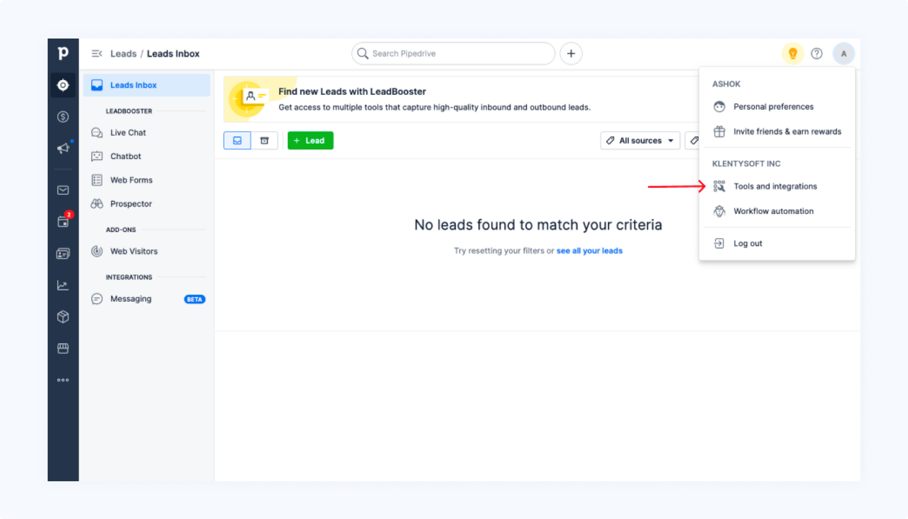
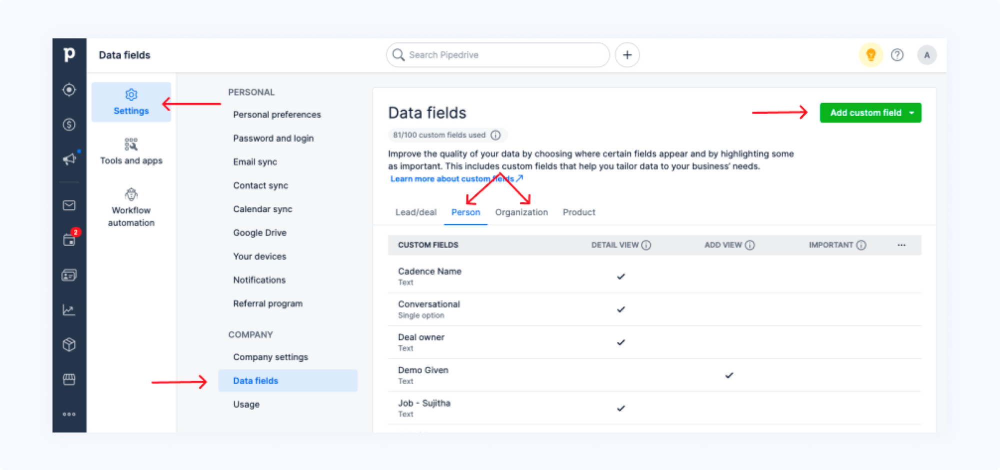
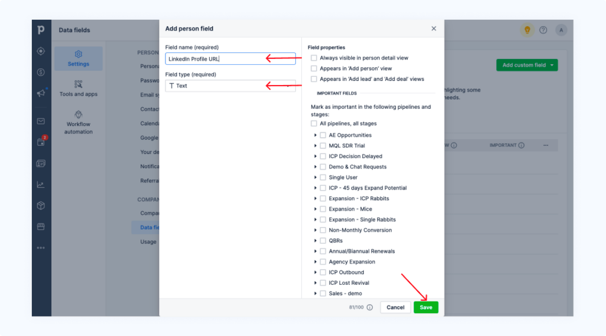

Support Docs
Pipedrive CRM With Linkport
How to prevent Duplicates on Linkport-Pipedrive?
When you import a lead from LinkedIn to Pipedrive CRM using Linkport, the "Add to Pipedrive" option next to the leads' name changes to "Added to Pipedrive".
The "Added to Pipedrive" doesn't appear for a lead that you have previously added if you have not mapped the LinkedIn profile to a field in Pipedrive.
Here is how you can map the LinkedIn profile to a field in Pipedrive CRM,
- In Pipedrive CRM, go to Profile → Tools & Integrations → Settings

- On the Settings page, select "Data fields", choose the "Add Custom Fields" button

- Enter your "Field name", and choose "Field Type" as "Text". Save to add your custom filed.
